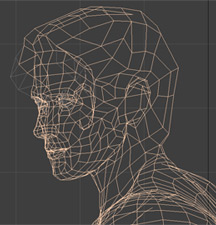
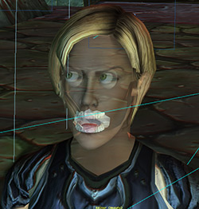

Why A Frozen Head Slows My Films Right Down
What the hell takes so long in my filmmaking?
That’s a question I’ve been spending a lot of time asking myself recently.
As of Friday, I’ve just completed the Release Candidate render for Death Knight Love Story, which I started making in 2009. Before that, I took approximately the same length of time to make my first feature film, BloodSpell.
Both of these are pretty significant projects, granted. One of them stars Brian Blessed, Joanna Lumley, Jack Davenport and Anna Chancellor. The other was a full-length animated feature film which has ended up being watched by hundreds of thousands of people.
But still, five years?
So I’ve been bugfixing, looking at my approach and figuring out what takes the time.
There are a lot of things that have popped up in the list, but one is a problem that’s common across all forms of animated filmmaking. And yet, when I talk to a lot of Machinima filmmakers in particular, they aren’t aware of the concept.
I’m referring to the concept of an animation “Pipeline”.
Problems In The Pipeline?
The pipeline of a project is the process of taking data from script to final .mp4 file (or whatever). It’s all the transformations, folding, spindling, and conversion processes that lurk invisibly in any animator’s workflow - and frequently gum up the works.
People who are experienced in the conventional 3D world are probably already nodding their heads at this point. But if you’re not familiar with this concept, here are a few examples.
Let’s take characters - which start out as descriptions, become 3D models, then end up being rendered with the rest of the film. On Death Knight Love Story, our characters were first drawn as flat 2D images, which were then translated into a 3D sculpture in the software package Maya. Our modellers then saved those files as “FBX” files, which in theory is a compatible format with most 3D software, and sent them to us.
Here’s where the fun begins. For starters, there are a whole bunch of invisible requirements buried in the phrase “character model”.
For example, they need to have a certain number of triangles and points in their structure, or subsequent 3D packages that have limitations on the number of triangles they can display (like pretty much any realtime 3D package) will choke and die. So it’s theoretically possible that you can end up having a completed model, animating that model, putting it into your renderer - and then realising you need to go back to the drawing board and make it again.
Here’s another issue: models need to have textures, the images which give them colour and detail. But those textures can cause all sorts of problems.
The Unreal engine, for example, will only accept textures in a very specific resolution. You might think you can just resize them later in Photoshop - but sometimes that won’t work, thanks to something else called a “UV Map” which determines exactly how a flat texture maps onto a 3-dimensional model. Didn’t realise that Unreal would have a problem with your textures? Welcome to Redo City, population you.
We also use other textures designed to signal fine detail - but there are a few different ways those can be formatted, and if you get the wrong one, when you load the model into a program that requires a different format, it won’t work. And again, that means going back up the pipeline, redoing that particular texture in some way, and then shoving it down the pipe again.
And so on.
The examples I’ve given above are pretty simple, but once you’ve solved these problems, others emerge. Subtle differences in the way programs consider 3D space to work. Different creative limitations in different packages. And so on.
Even at huge companies like Pixar or Dreamworks, these problems gum up the works all the time. Indeed, they gum up the works so much that large 3D companies have entire teams of programmers dedicated to solving them, doing things up to and including creating entire new 3D formats to solve their pipeline problems.
The Pipeline’s Not Just Tech
Pipeline problems can also lead to hidden bear-traps for particular creative decisions.
For example, in the early days of Death Knight Love Story we didn’t exactly know how we were going to do our facial animation. That meant that when I was having our character models created, I decided that we’d add mouth geometry later. We didn’t know exactly what technique or requirement would be best, we wouldn’t be able to tell until we’d done some animation, and I didn’t want to spend a lot of money modeling features that we’d end up ripping out and changing.
That meant we ended up with faces that didn’t have detailed geometry for the inside of the characters’ mouths. Shouldn’t be a problem, because it’s easy enough to add detail to a figure later. Except…
One of the later stages of character creation is attaching the model’s triangles to “bones” that control the character’s movement. So, the head triangles get attached to the “Skull” bone, whilst the hand triangles are split between the “Hand” and “Finger” bones.
When we realised that we needed new facial geometry, it was fairly simple for Tom, who was working on the facial animation, to sculpt us some teeth and a tongue. But then we discovered that whilst they looked great in place, as soon as we loaded the model into 3D Studio Max, every single triangle on the model stopped talking to its bones.
Why?
Because changing the geometry changes the number of “vertexes” (points) in the model, and 3D Studio Max keeps track of its connections between bones and triangles by looking up the internal number of vertexes. So as soon as we added a few, Max saw that it had some vertexes it didn’t recognise. And it turns out that Max’s default behaviour in that case is to throw a massive wobbler and refuse to work at all until everything’s completely reconnected from the ground up.
We’ve ended up having to animate entirely separate inner-mouth models for each of our heroes and carefully position them inside our characters’ heads!
So How Do You Smooth Your Pipes?
One of the biggest speed-ups for any 3D process is, simply, having done it before.
The first time you make a film, you’ll encounter a whole bunch of problems. They’ll slow you right down - like our mouth issue - but once you’ve solved them, you don’t have to solve them again.
On BloodSpell, we wrote software tools to let us control mobs of characters in Neverwinter Nights, after realising the in-game tools made mass control a nightmare. On Death Knight Love Story, we’ve figured out the obscure (and, cough, undocumented) commands that make Mach Studio Pro’s global illumination pretty, and have Python scripts that let us automatically re-apply the textures that always fall off in the conversion process from game to film. We know how to do facial animation the Right Way, and we know what’s likely to magically break when we hit “Export” in any given tool.
Unfortunately, nearly every time I’ve made a film, I’ve ended up having to create an entire pipeline for it: from the early days of making movies in Quake, back in 1997, to working on unreleased AAA game technology with Electronic Arts in 2001, through to modding Neverwinter Nights beyond recognition for BloodSpell and on to Death Knight Love Story.
In Death Knight Love Story’s case, I’ve actually ended up creating two pipelines: one for the first drafts of the film using Motionbuilder and early motion capture, and a second one for using the exciting renderer Mach Studio Pro and our Xsens mocap suits.
Fortunately, this time is the last time I should have to completely change pipeline. Whilst I’m changing the way we create characters and sets, and I’m changing the way we render out images at the end, the central core of our production process will at least be similar for future films to the one we’re using now.
Smooth Pipes All Around - For Machinima, At Least
On a wider scale, that’s happening all across Machinima. Wheras 10 years ago we were all merrily hopping from game engine to game engine, reinventing wheels as we went, these days many of the core Machinima tools have stabilised.
Moviestorm, Second Life, iClone, Motionbuilder - all of these have been around for a while and don’t show any signs of vanishing any time soon.
And whilst there are still exciting things happening in 3D, overall there’s not the same mad pace of change as there was in the early 2000s.
That’s actually good. New technology comes with hidden overheads, as I’ve shown in this article. Now that we’re starting to home in on things that Just Work, I think we can expect the pace of production to go up.
And personally, I’m expecting my productivity to shoot up the first time I get to make a new film with a pipeline I already understand. I’m already seeing the benefits with some of our new production tests.
It’s strange for such a technophile artform to celebrate innovation slowing down.
But for Machinima, “nothing much new” might actually herald a golden age of productivity.